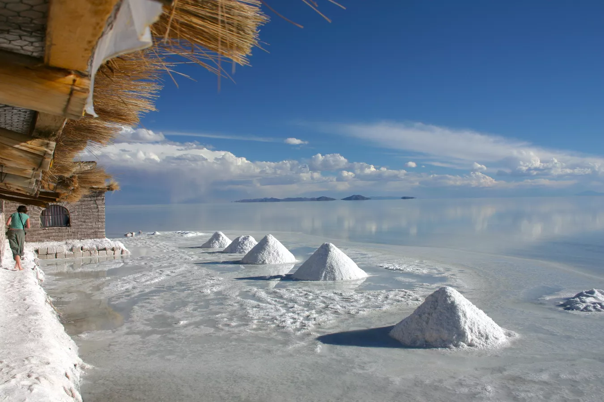
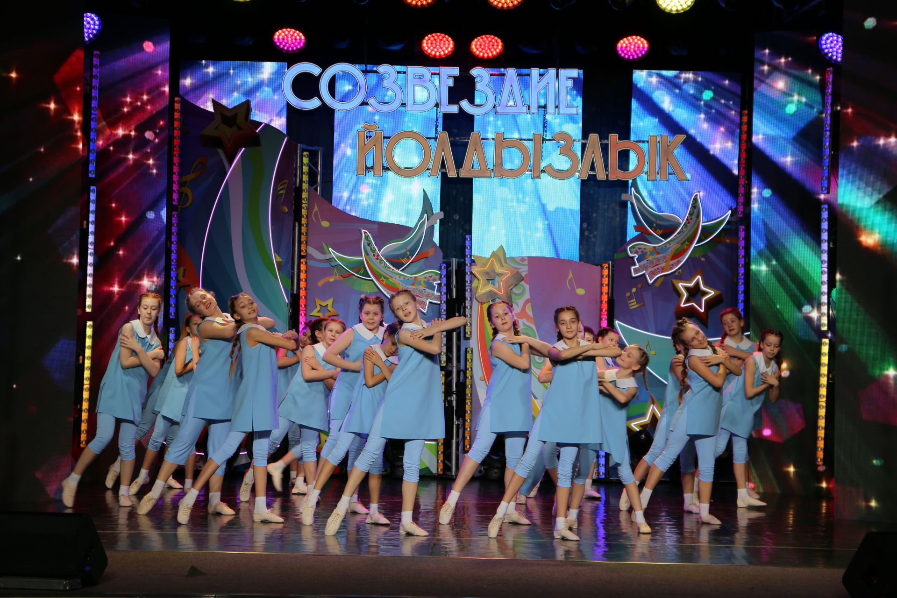
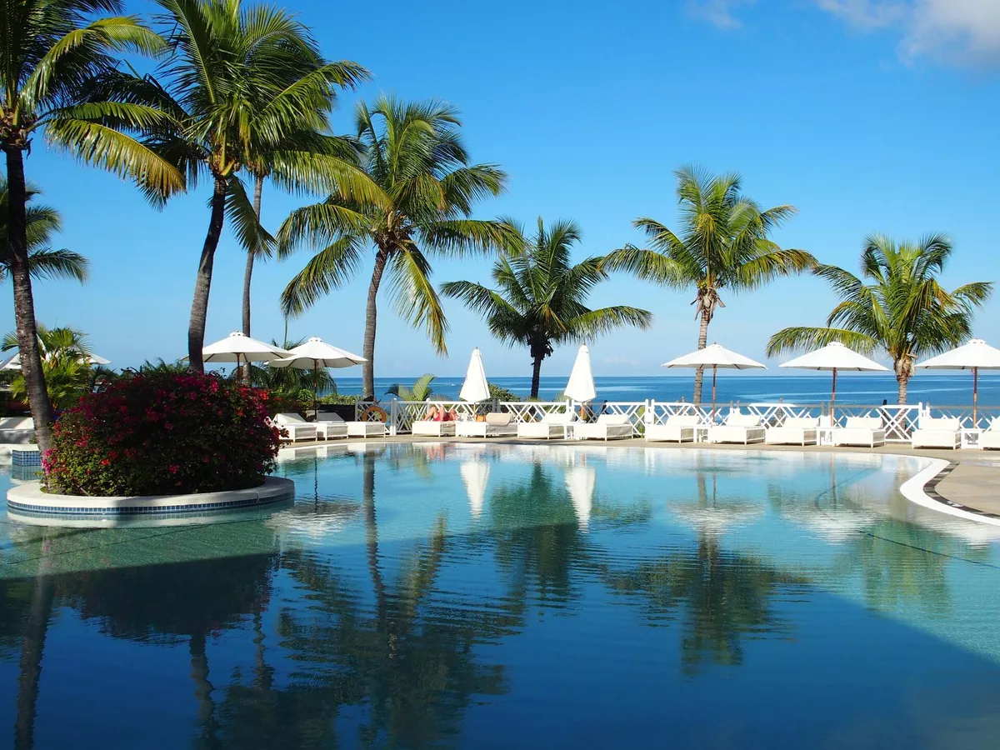
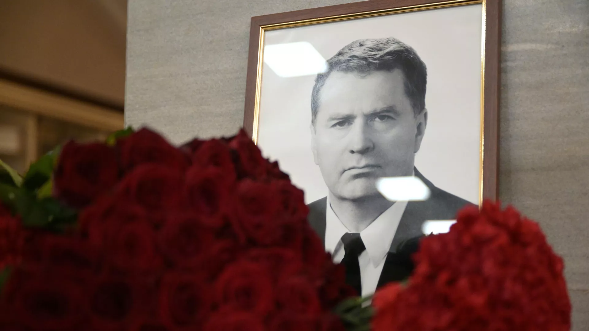
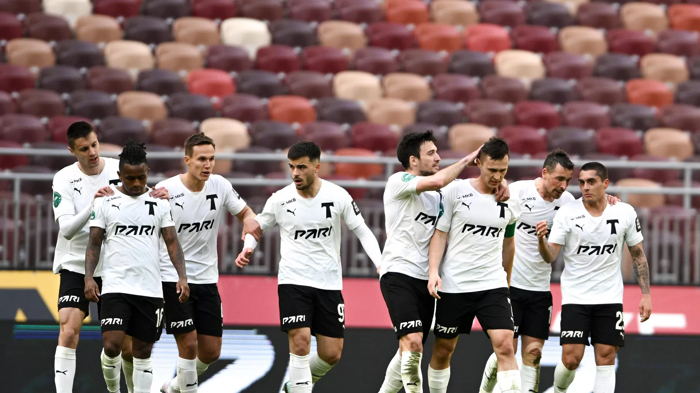
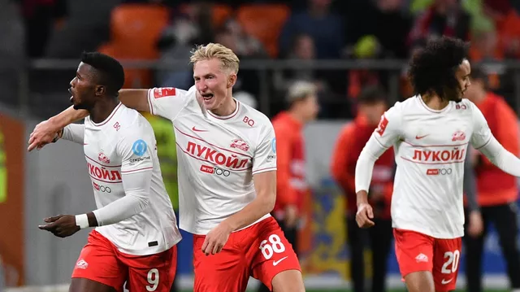
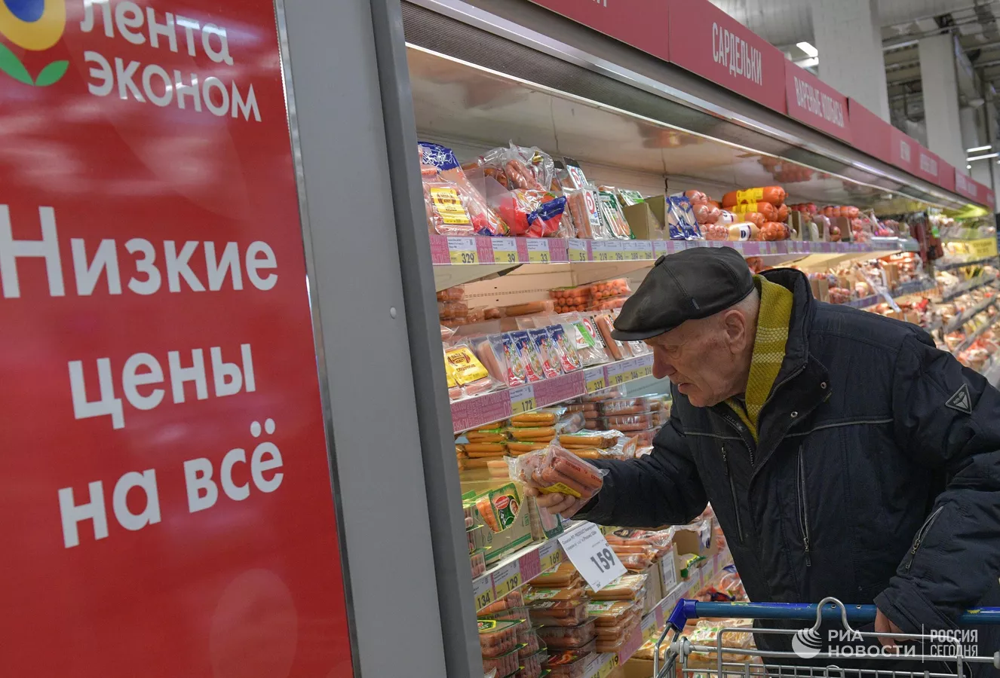
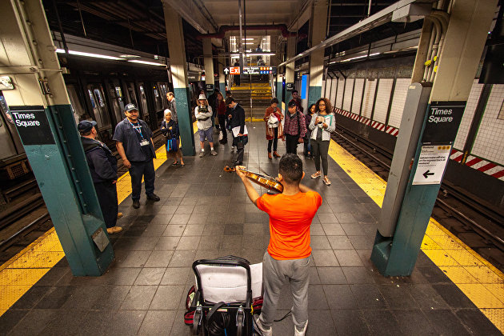
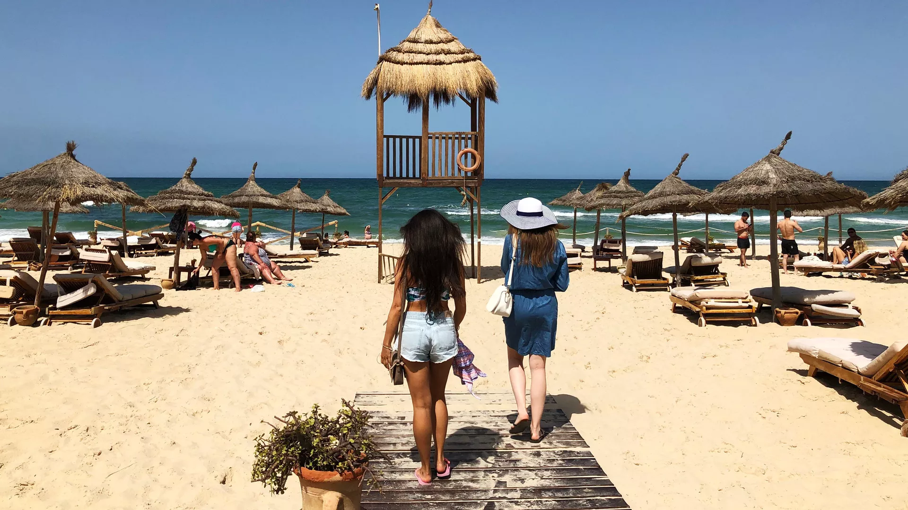
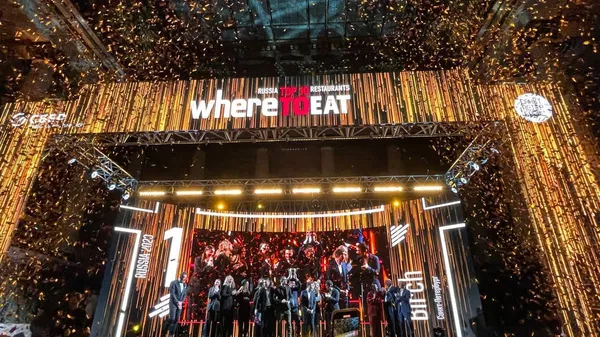

Популярное
Еще →

На вес золота. Россия начинает добычу стратегического сырья
После 25-летнего перерыва в стране приступают к добыче лития.

Зональные этапы фестиваля “Созвездие Йолдызлык” стартовали в татарстане
В Татарстане начались зональные этапы XXIII Ежегодного открытого республиканского телевизионного...
Политика
Еще →

Россия стала важным партнером Маврикия, заявил посол страны
Москва стала важным партнером Порт-Луи в новых геополитических условиях, стороны работают над подписанием ряда соглашений в различных сферах.

Мишустин назвал Жириновского истинным патриотом
Премьер-министр России Михаил Мишустин в годовщину смерти основателя ЛДПР Владимира Жириновского назвал его неординарным политическим деятелем и истинным патриотом.
Спорт
Еще →

"Торпедо" одержало первую победу за полгода
"Торпедо" обыграло "Факел" в матче РПЛ, одержав первую победу под руководством Клотета

РПЛ опубликовала расписание оставшихся туров чемпионата России
Российская премьер-лига (РПЛ) опубликовала на официальном сайте расписание оставшихся туров чемпионата России по футболу.
Экономика
Еще →

Аналитики выяснили, где россияне делают чаще всего покупки в выходные
Россияне в выходные активно покупают продукты в супермаркетах, там совершается 70% всех платежей по картам, при этом средний чек покупки за год снизился на 6,7%, до 776 рублей.

Безработица в США неожиданно снизилась в марте
Безработица в США в марте снизилась до 3,5% с уровня февраля в 3,6%, а число занятых в несельскохозяйственных отраслях экономики увеличилось на 236 тысяч.
Путешествие
Еще →

Новые рейсы на зарубежные курорты открыты: секреты отдыха в Тунисе
Сегодня возобновляется прямое авиасообщение с Тунисом. Практически каждый отель здесь предложит лечение морем...

В Петербурге назвали лучшие рестораны России
Ресторанную премию Wheretoeat вручили в Петербурге, первое место занял Birch